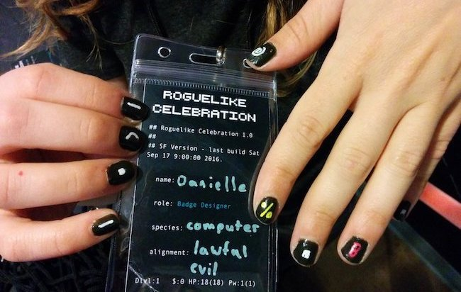
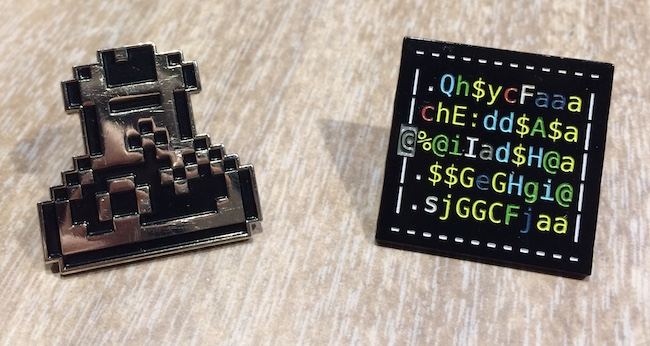
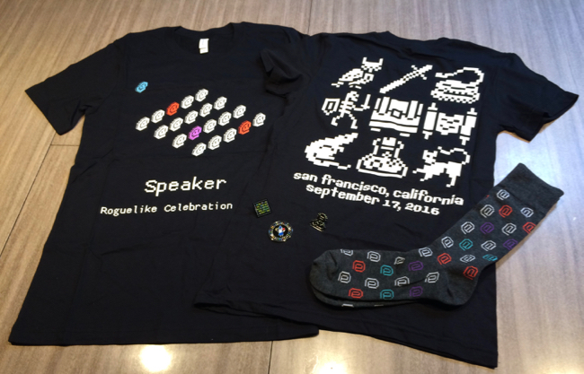
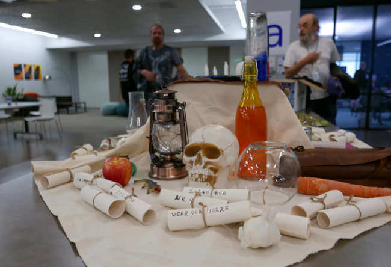
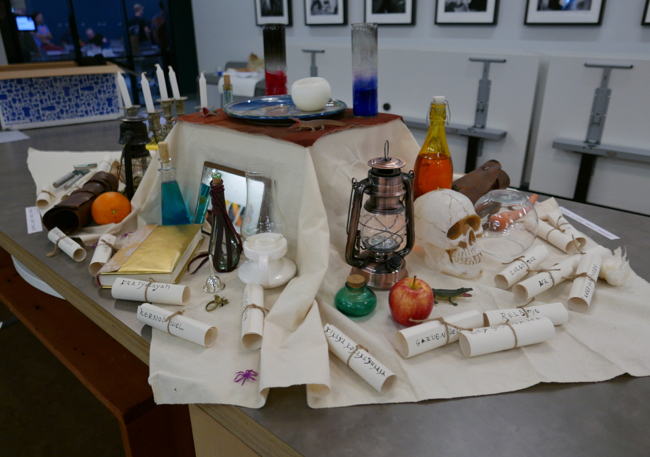

Celebration 2016
Articles, swag, decorations, and tweets from the Roguelike Celebration on September 17, 2016.
Tweet archive: #roguelikecel. Instagram photos.
Before the main event in September, we held a free roguelike meetup on May 17, 2016 in SF.
Talk videos
Videos from the 2016 event are on the Internet Archive and YouTube.
Articles and blog posts
Curious what it was like? Here are stories from people who were there:
- Tony Carnevale, Kotaku: "Rogue Creator Says We Need A Better Word For Permadeath"
- Josh Ge, speaker: "Roguelike Celebration 2016, the Experience"
- Mark Gritter, attendee: "Roguelike Celebration notes 1/N", "Roguelike Celebration 2/3", "Roguelike Celebration notes 3/3"
- Justin Hamilton, attendee: "Roguelike Celebration 2016"
- Alex Handy, Software Development Times: "SD Times Blog: The story of Roguelikes and ASCII"
- John Harris, speaker: "Roguelike Celebration, Notes on My Talk"
- Santiago Zapata, speaker: "Roguelike Celebration 2016 San Francisco"
- Alex Zelenskiy, attendee: "Roguelike Celebration Recap"
Swag for attendees and speakers
Just for fun, we designed badges, pins, t-shirts, and socks for all attendees, along with special t-shirts and challenge coins for speakers. We got to make roguelike fan merchandise!

Badges (and nail art) designed by Danielle Baskin.

Pixelly potion pin designed by Amanda Glosson, and Nethack treasure zoo pin designed by Noah Swartz.

Speaker t-shirt designed by Allison Hughes (an audience listening to a speaker), attendee t-shirt designed by Amanda Glosson (with pixelly dungeon creatures and items), and @ symbol socks designed by Allison Hughes. If you want to make custom socks, Sock Fancy does a great job.

Challenge coin for speakers (a wizard with a wand and spellbook, surrounded by potions), designed by Allison Hughes. We thought it'd be nice to give speakers a little memento they can display.
Decorations
We had a table with an altar, potions, unidentified scrolls, oil lamps, comestibles, bones, a candlelabrum with candles, a silver bell, a crystal ball, lizards, leather armor, a wooden flute, amulets, rings, spellbooks, a mirror, tins, a tin opener, and other items from Nethack.


We put up posters with quotes and monsters from Nethack.

"You are lucky! Full moon tonight." and the warning you get at the gate of Gehennom. There really was a full moon that night. (Photo by Matt Boyd.)
Sponsors

Eventbrite generously donated use of their office space as the venue — thank you to them and their staff.

DigitalOcean generously supported this celebration.
A few of the tweets
People wrote lots of nice tweets with quotes and photos. Here are a few of them!
Attendees
Rogue panel
Bits from various talks
9:00
Doors open. Coffee available.
9:45
Kick-off in the cafeteria with Noah Swartz.
10:00
To the uninitiated, roguelikes appear simple: text blips denoting monsters and legendary heroes prowl through dungeons hewn from hash signs and periods. Under the hood, these games abound with clever algorithms that ensure no two adventures will ever be the same. Dungeon Hacks author David L. Craddock plumbs depths of 10,000 feet to discuss the history of the genre—from primordial titles like Beneath Apple Manor and Rogue to contemporary classics such as NetHack and Angband, and the foundational tropes that inspire the roguelike authors of today.
David L. Craddock is
the author of several books on game development including Dungeon Hacks, Stay Awhile and Listen, and Break Out: How the Apple II Launched the PC Gaming Revolution. Additionally, he is the author of Heritage, a fantasy novel for young adults named runner-up of the Shortlist for Speculative Fiction Book of the Year (2014) – Book Publishers Association of Alberta.
George Moromisato will talk about his love for Nethack and how adapting its mechanics to his game, Transcendence, taught him more about game design than any course or book. Along the way he’ll speculate on what makes Nethack (and other Roguelikes) so special, and what makes them so much deeper and engaging than many big budget games.
George Moromisato is an American software engineer and game designer. He’s been programming for 70% of his life and has worked at Microsoft, IBM, and Lotus Development Corporation. He is the creator of several computer games, including Anacreon (one of the first 4X games), Chron X (the first online collectible card game), and most recently, Transcendence. You can reach him via email (gpm@kronosaur.com) or Twitter (@Transcendence).
10:30
Track 1
Rogue panel with Ken Arnold, Michael Toy, and Glenn Wichman.
The three original creators of Rogue will have a panel discussion
about rogue and its history, moderated by David Craddock. They
will discuss the game's development and their process as well as
its legacy, before opening the floor for questions from the audience.
This talk examines how features of the roguelike
genre relate to accessibility for visually impaired players, using
Nethack as a case study. Several changes were made to Nethack to
make it more accessible, and the feedback from this case study
provides several lessons as to how roguelike games in general can be
made more accessible, as well as what aspects of them pose the
biggest challenges to accessibility.
Alexei Pepers is a graduate of the University of Calgary, who is
now working as a programmer in the games industry at Beamdog. She has
loved Nethack since childhood and always wanted to know how it ticked,
so in the final year of her degree conducted a research project on
introducing accessibility for visually impaired players to Nethack,
under the supervision of Dr. John Aycock. John Aycock is an associate
professor at the University of Calgary, and the author of Retrogame
Archeology: Exploring Old Computer Games.
11:00
Break.
Enjoy our dedicated quiet room (the library), socialize with speakers and attendees, or just relax.
11:15
Levels of Rogue are virtual spaces, but also typographical grids that relate to a 1st century Latin word square, typewriters from the 19th century, concrete poetry and visual art in the 20th century, and preceding computer games. By considering the history of monospace type, character sets, and the visual arrangement of punctuation and letters, along with the ways language has been inscribed by hand, by machine, and digitally, it's possible to see new genealogies for roguelikes and new contributions these games have made.
Nick Montfort works in creative computing, particularly as it relates to language and text. He develops computational art and poetry, often collaboratively. He studies video and computer games, popular and obfuscated programming, digital poetry and other electronic literature, demoscene productions, and aspects of computing that are less easily classified. He is professor of digital media at MIT and lives in New York and Boston.
The eternal war against the Hypothetical Optimal
Player: how to avoid players' worst instincts and
make a game that's fun to play well.
Nicholas Feinberg is an obscure independent game
developer (best known for Manufactoria), Nicholas
joined the Stone Soup team in early 2014. He's since
become one of the most active developers. Likes:
elegant, minimalist designs, non-traditional
settings, and long walks on the beach.
11:45
Beyond the Mad Lib (But Just Barely): an oral
history of the ways in which Kingdom of Loathing
uses procedural text generation for flavor and
humor.
Zack Johnson is the creator of the long-running web MMORPG Kingdom of Loathing and its upcoming cowboy spinoff West of Loathing. If prompted (or intoxicated) he will speak at length on the virtues of HTML frames.
Track 2
Angband with Erik Osheim and Robert Au.
Alter Reality:
Erik Osheim and Robert Au will talk about the
evolution of Angband over the last ten years of
development. Starting with the unofficial release of
3.0.7s, this will include the creation of a dev
team, the successful effort to relicense Angband,
and the sometimes controversial efforts to continue
to develop and improve Angband. The talk will focus
on Angband’s game mechanics as well as the
principles and development practices that keep the
project going.
2:00
John Harris is the author of
@Play, a column about roguelike games.
Surface-dusting Storytelling: Humor and Fiction in
Dungeonmans. Roguelike players enjoy building their
own fiction around the adventures of their hero, and
this is usually encouraged by the ridiculous
specifics and wild build customization available in
most roguelikes. There's a spectrum between a blank canvas
world where everything centers on the travels of
your murderhobo, and a highly detailed world with
concrete fiction such as Qud. Jim will talk about
how you can bring more of their setting's ideas to
life without having to dive too deeply into a
fiction, as well as how to apply humor with enough
subtlety as to not beat players over the head with
it.
2:30
The creators of Dwarf Fortress discuss the influence
of several roguelikes on the foundation and
continued development of the project.
Tarn and Zach Adams are the co-founders of Bay 12
Games. Their main project is Dwarf Fortress, a
fantasy simulation game which is distributed free of
charge and has developed a strong niche
following. While centered around a dwarven colony
mode, the game's adventure mode is a traditional
roguelike roleplaying game.
Get your game done: Experiences through the
development of 13 roguelikes.
Santiago Zapata (also known as Slash) has been messing around with roguelikes for about 15 years. Creator of roguebasin, roguetemple, and many not-so-famous roguelikes, he enjoys pushing the boundaries of the roguelike genre to create new gameplay experiences, while keeping the spirit of the originals.
3:00
Break.
Enjoy our dedicated quiet room (the library), socialize with speakers and attendees, or just relax.
3:15
From Hobbyist to Full-time Roguelike Developer.
Tracing my route from before I even knew what a
roguelike was to years of exploring the genre and
community before setting out to create a grand and
innovative roguelike with just the right mix of
traditional and modern features to help guide the
genre towards a more mainstream audience without
losing anything that makes roguelikes great.
For the past three and a half years,
Josh
Ge (aka Kyzrati) has been working on Cogmind, a
sci-fi robot-building roguelike with a focus on
audiovisual immersion and a combination of
procedural and handmade content. Josh has spent
years helping other developers in the community,
writing articles about building roguelikes, and also
created REXPaint, a widely-used ASCII art and
roguelike development tool.
Procedurally generated content is
great, but writing so much custom code becomes
unwieldy and too many great projects die tangled-up
in long chains of if-statements. Tracery, a popular
and newbie-friendly generation tool, can keep data
for procedural content generation separate from the
gameplay code, while still generating neat stuff.
The creator of Tracery demos a few neat tricks
(no-hassle reskinning of RPGs and more!) and shows
some hard-earned lessons for how keeping your data
and code separate can make projects clean,
maintainable, and fun to build.
Kate
Compton is a long-time Procedural Content
Generation (PCG) practitioner. She wrote the first
paper on procedural platformer levels, generated the
planets for Spore, and wrote the latest SimCity fire
system. She is now a PhD candidate at UC Santa Cruz
developing artificial intelligence to augment human
creativity with generative art. She likes laser
cutting, 3D printing, artbots, twitterbots, and
baking.
3:45
I will give a quick run through developing ADOM for
24 years commenting on particularly strange,
enlightening, amusing and memorable events during
that time. Maybe I'll even show a little bit of the
source code. ;-)
Thomas
Biskup has been the ADOM developer and
maintainer for over 20 years. Besides spending time
on ADOM he is a computer scientist, founder of
QuinScape GmbH, a German IT service company,
published RPG designer and general nerd and
geek. And between all that he even managed to finish
his Ph.D. (but he only insists on being called
Doctor if you annoyed him or he is annoyed of you
;-) ). He is proud to have been there at the dawn of
time when the Internet as we know it nowadays
evolved and notices that he's getting old when he
starts mumbling about "the great olde times of
yore".
Markov text generators are
hilarious,
poetic,
and
surprisingly
creative. But they haven't found much of a home in games.
In this talk, Jason Grinblat teaches you to build your own
Markov text generator. He then walks through a design experiment
in which he uses Markov text to procedurally generate in-game
lore books for his roguelike/RPG, Caves of Qud. He explains
how he moves beyond "just a generator" and weaves a game mechanic
around the text generation: players can research generated
books at an in-game library and learn meaningful secrets
that they can act upon in the game world.
Jason Grinblat is co-founder, designer, writer, and gameplay programmer
for Freehold Games,
the tiny studio behind Sproggiwood and Caves of Qud.
Their mission is to build imaginative games that involve
offbeat settings, interesting tactical situations, and a
whole lot of emergence in the tradition of the roguelike genre.
4:15
Break.
Enjoy our dedicated quiet room (the library), socialize with speakers and attendees, or just relax.
4:30
Drew is the owner
of
nethack.alt.org,
the host of
nethackwiki.com, and the author of
dgamelaunch (the frontend for most public Nethack
and Nethack variant servers these days). He will
talk about the role of public servers for roguelikes
and will field questions about NAO.
The creator of Brogue will talk about emergent
storytelling in roguelikes. How can each play of a
procedurally generated game feel distinct and
memorable to a veteran player? And how can a single
player game reward both skill and creativity? Brian
will discuss specific gameplay elements and game
design techniques to maximize the number of unique
player experiences per unit of game content.
Brian Walker grew up playing the original Rogue. He taught
himself to code by developing Brogue to be the
roguelike that he always wanted to play.
5:00
Five-minute talks covering any topic that an
attendee wants to talk about.
In the words of the Bad News team: "The third installation of Bad News was at the Roguelike Celebration in San Francisco. For the first time, we conducted a live playthrough in front of an audience. This was done in in the style of a radio play: gameplay still took place in an isolated room, but the audio was piped into an auditorium where the wizard also performed live, with his interface projected onto a large screen; additionally, the guide provided narration about behind-the-scenes activities. Trivia: Both Rogue and Bad News originated at the University of California, Santa Cruz."
Voyageur is an upcoming literary RPG about exploring
a galaxy full of distinctive cultures and
ideologies. This is a 20-minute talk about how
Voyageur uses prose generation to create evocative
descriptions of procedurally-generated places.
Bruno
Dias is a game developer, IF author, writer, and
theorist based in São Paulo, Brazil. His nonfiction
writing has appeared on Giant Bomb, Zam, and ZEAL;
currently, he's working on Voyageur, a literary
science fiction game about one-way space travel.
5:30
Track 1
Show and Tell.
Bring a laptop with your favorite game on it and
show it off to other participants!
Track 2
Bad News.
Track 3
Open Play.
Perhaps try a game you haven't tried before, with
the option of help from experienced players when you
get stuck (or offer to help others). Plus: wiki
editing time, collaboratively
updating
articles
on Wikipedia and other popular wikis, such
as
NetHackWiki,
Crawl
Wiki,
and
RogueBasin.
6:30
Event ends. Hard stop at 7:00.
Thanks for attending!